Introduce
Marie Salomea Skłodowska–Curie born Maria Salomea Skłodowska, date of birth 7 November 1867
naturalized-French physicist and chemist who conducted pioneering research on radioactivity.
She was the first woman to win a Nobel Prize, the first person to win a Nobel Prize twice,
and the only person to win a Nobel Prize in two scientific fields. Her husband, Pierre
Curie, was a co-winner of her first Nobel Prize, making them the first-ever married couple
to win the Nobel Prize and launching the Curie family legacy of five Nobel Prizes. She was,
in 1906, the first woman to become a professor at the University of Paris.
She was born in Warsaw, in what was then the Kingdom of Poland, part of the Russian Empire.
She studied at Warsaw's clandestine Flying University and began her practical scientific
training in Warsaw. In 1891, aged 24, she followed her elder sister Bronisława to study in
Paris, where she earned her higher degrees and conducted her subsequent scientific work. In
1895 she married the French physicist Pierre Curie, and she shared the 1903 Nobel Prize in
Physics with him and with the physicist Henri Becquerel for their pioneering work developing
the theory of "radioactivity"—a term she coined. In 1906 Pierre Curie died in a Paris
street accident. Marie won the 1911 Nobel Prize in Chemistry for her discovery of the
elements polonium and radium, using techniques she invented for isolating radioactive
isotopes. Under her direction, the world's first studies were conducted into the treatment
of neoplasms by the use of radioactive isotopes. She founded the Curie Institute in Paris in
1920, and the Curie Institute in Warsaw in 1932; both remain major medical research centres.
During World War I she developed mobile radiography units to provide X-ray services to field
hospitals.
While a French citizen, Marie Skłodowska Curie, who used both surnames, never lost her
sense of Polish identity. She taught her daughters the Polish language and took them on
visits to Poland. She named the first chemical element she discovered polonium, after
her native country.[a] Marie Curie died in 1934, aged 66, at the Sancellemoz sanatorium in
Passy (Haute-Savoie), France, of aplastic anemia likely from exposure to radiation in the
course of her scientific research and in the course of her radiological work at field
hospitals during World War I. In addition to her Nobel Prizes, she has received numerous
other honours and tributes; in 1995 she became the first woman to be entombed on her own
merits in the Paris Panthéon, and Poland declared 2011 the Year of Marie Curie during
the International Year of Chemistry. She is the subject of numerous biographical works.
Develop
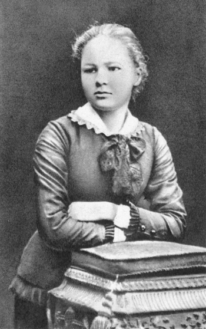
Maria has been able to read since the age of 4, is always at the top of her class and has many excellent achievements, excelling in many subjects. But Maria was not happy because at that time Poles were forbidden to read and write Polish and had to obey Russian law. However, the family still speaks Polish and sings folk songs for hope. wanted the national identity not to be lost.. Moreover, Maria's father was fired, the family had to move to a dormitory. Maria's eldest sister, Sophie, died of typhoid. Later, Maria's mother also died of tuberculosis, when Maria was only 11 years old. Where Maria lives and all countries in the eurozone, not all women have access to school. So Maria tried a lot of part-time jobs during her teenage years. When she accumulates enough money, her destination is a promising Paris of science, of extraordinary things and of women approved to study and work in this land. Maria tries to study well, sometimes Maria forgets to eat and sleep. Not long after, Maria passed valedictorian, but because of lack of money, Maria had to work as a tutor to have money to go to school. When working as a tutor, she used to have a lover, but due to circumstances, love did not come to her. She left everything to her third sister, Bronisława Skłodowska, to enter the Medical University in Paris. Go to Paris Marie continued to earn money and finally made it to Paris as she wanted. There, at the Sorbonne, she studied many subjects and borrowed many books from the library to study. Because of studying too much, Marie suffered a nervous breakdown for a year. At that time, women were always looked down on, Marie took that as a motivation to study hard. Success finally came to her: Marie entered the Sorbonne and became a bachelor. After that, Marie returned to her hometown to visit her father for a year. Then at the end of the year, she went back to school.
Analysis
-Marie Curie's Discovery of Radioactivity
Since 1898, she has been trying to find out the exact characteristics of this emission by
measuring the maximum intensity (which is very weak) of the ionizing flux that can be
emitted in the air under its influence.
She would use later in her research the electrostatic meter (électromètre = electron meter.
The current generated by the movement of electrons), which Pierre corrected, would be a
perfect fit. with his research. grandma. She has tried to determine by many analytical
experiments whether uranium ore alone is emitting. She discovered that Thorium's compounds
emitted the same kind of rays.
The mineral Uranium (Pechblende) is also four times more active than expected. Marie
concluded that if Uranium ore is so active it is due to the presence of elements called
Radioactifs (radioactive substances) that have the property of transforming itself into
another substance and then emitting energy in the ore, but in quantities so small that they
are difficult to detect by classical chemical analysis.
At that time Pierre collaborated with Marie. They threw themselves into a diligent and
meticulous chemistry department. At the time, the research was not as well-funded as it is
today, but the young couple managed to get an empty barn and shabby isolation in the sleet
(erratic weather). They worked with a maid named André Debierne. Using an electrostatic
meter, they measured the radioactivity in the fractions produced by chemical separation.
Phát hiện 2 nguyên tố mới: Polonium và radium
In July 1898, they discovered the first substance, which they named Polonium, in honor of
Marie's hometown.
Analysis of baryum obtained using the mineral uranium allowed them to show that a second
radioactive element was present in very small amounts, which they called Radium, and
published their discovery in 1898. only emphasizes that the radioactivity of this substance
is very high.
She also created a table of all known radioactive elements in 1910. The points in common
were placed in the same row.
-Điều trị ung thư bằng radium.
Marie Curie developed research into the radiation potential of radium in the treatment of
cancer using a method called "concentrated radiotherapy". This is an advanced procedure in
which radium is used to irradiate targeted malignancies.
She and her research team created the first "radium jaw". The radium jaw consists of tubes
containing radium that are attached near or directly to the tumor. When radium decays, it
emits radiation capable of penetrating cancer cells and causing their destruction.
This focused radiation therapy allows precise impact on the target area, minimizing damage
to surrounding tissue. Because radium has the ability to emit radiation continuously for
long periods of time, it can deliver a continuous dose of radiation therapy to the tumor
throughout the course of treatment.
1. Radium isolation: Marie Curie and her research team conducted the process of isolating
radium from samples of uranium ore. This requires time-consuming and elaborate work to
separate radium from the dependents.
2. Fabrication of the "radium function": Marie Curie has developed a device called the
"radium function" or the "Curie function". This is a structure of tubes containing radium
placed near or in direct contact with a cancerous tumor.
3. Focused irradiation: When radium decays, it emits radiation capable of penetrating cancer
cells. By placing the radium myopic jaw into the tumor, the radiation rays directly affect
the target area, aiming to destroy the cancer cells.
4. Radiation therapy dose: Radium has the ability to emit radiation continuously for a long
time. This allows for a steady and continuous delivery of radiation to the tumor throughout
the course of treatment.
Marie Curie's focused radiation therapy has minimized damage to tissues around the tumor, in
order to optimize the effectiveness of cancer treatment. Her work was an important
breakthrough in the application of radiation in cancer treatment and paved the way for the
development of modern radiotherapy methods.
Laboratory
Studying the properties of radioactive substances
After Becquerel's initial discovery of the radioactivity of uranium in 1896-1897, and the
discovery of radium and polonium by Pierre Curie and Mari Curie in 1898, studies of
radioactivity flourished. Publications on this topic are constantly increasing. During the
1920s, the radiological research community organized its activity around a network of
important laboratories including the Marie Curie Radiology Institute, the Stefan Meyer
Institute in Vienna, and the Cavendish Laboratory in Cambridge led by the Marie Curie
Radiology Institute. Dr. Rutherford, and the Berlin chemistry laboratory under the direction
of Otto Hahn and Lise Meitner. These laboratories approach and conduct experiments in
different ways. In Cavendish, for example, scientists mainly study the physical changes of
radioactive materials, and the mechanisms and products of decay. In Berlin, scientists have
been very successful in identifying new radioactive substances and studying their physical
properties.
In France, the Marie Curie laboratory, established by the University of Paris and the
Institut Pasteur, is a laboratory that plays a particularly important role both in terms of
scientific achievement and the number of researchers. She and her colleagues studied the
physicochemical properties of radioactive substances and their applications in medicine.
When Marie Curie came to work at this laboratory, she was already a famous scientist. Before
that, she began her career in a former warehouse of the Paris School of Industrial Physics
and Chemistry (EPCI), where Pierre Curie was a professor. It was in this warehouse on
Lhomond Street that, in 1898, the Curies discovered polonium and radium.
radiometric measurement
The Curie Laboratory develops measuring instruments and techniques for use in France in all
areas related to radioactivity. Radium industrialists, mineralists, and doctors have all
used radiation detection and evaluation methods developed by Curies.
In France, the first electrical experiment used to measure radioactivity was completed in
1900 by Pierre Curie. At the Congress on Electricity and Radiation in Brussels, a committee
was set up to consider the question of metrology. for Marie Curie to conduct international
radioactive sampling. The members of the Committee also defined the rules of the measurement
system and named the radioactive unit "curie".
Since its inception, Curie's laboratory has received great demand from the outside. From
commercial radium salt testing to radiotherapy devices, Marie Curie meets all of these
requirements. In late 1911, she founded a paid metrology service. But it soon collided with
university guidelines that do not allow professors to profit from personal relationships
with industry.
Curie Lab's paid service has been operating illegally for 2 years. Marie Curie then won: the
university principal agreed to let her maintain the service on the condition that the
university examined the finances. The laboratory's employees, mostly women, are paid to
order. This department has become part of a nationally renowned metrology laboratory.
Applications in medicine
Curie Laboratories has maintained a relationship with the medical community from an early
age. In 1901, Pierre Curie collaborated with doctor Henri Danlos at Saint Louis Hospital,
Paris to test a method to cure skin diseases and cancer thanks to the properties of
radioactive substances. At the Radi Institute, founded in 1913, directed by Marie Curie,
there was also a research direction on the application of radioactive substances in the
biological and medical fields, led by Dr. Claudius Regaud.
In 1916, Marie Curie jointly created a radon gas lamp to treat wounds and supply military
medics and civilian hospitals. The medical use of radium flourished in the years 1910-1920.
However, gradually, people realized the dangers of radiation. In 1934, the French Ministry
of Labor included diseases related to radium salt production on the list of occupational
diseases. As a result, this treatment method was not popular and was even abandoned due to
the dangerous nature of radium. Since the 1950s, radiation therapy has been revived with
long-range irradiation and the use of artificial radioactive rays.
Scientific Glory
- After reading the work of physicist Henri Becquerel and after consulting her husband, Marie
Curie was determined to enter the field of physics. At that time, only strange substances
with the characteristic of emitting radiation were found, but no one knew how many such
substances existed and how these substances and their rays differed. Scientists have named
these substances "radioactive substances". After Roentgen discovered X-rays, scientist Henri
Becquerel immediately thought that radiation had the same origin as X-rays. Becquerel's
studies were just the beginning. A fuller understanding of the laws of radioactivity must
await the studies of Pierre and Marie Curie.
Not long after, Marie Curie noticed that not all of the uranium was radioactive, but that
the rock contained only a tiny fraction of it. The merits of the Curie couple is to let the
scientific world know that there are many different radioactive substances, although many
are just variations of each other and there are non-radioactive substances such as lead,
gold, etc., which are also variations of each other. of radioactive material. This discovery
is very important because thanks to it, people have found a way to break the atomic nucleus
and make an atomic bomb later.
Initially, Madame Curie discovered two different radioactive substances, the first in the
summer of 1891 and she named "Polonium" in memory of her dear Poland, the second was
"Radium" ". discovered a few months later. But Curie's work was not immediately accepted by
the scientific community. It was important to Pierre and Marie Curie to find pure Radium.
Pechblend is a substance used in the glass industry. This substance is very expensive but
the amount of Radium in it is not much. In 4 years, after refining 8 tons of pechblende, the
Curie couple found 1 gram of pure Radium. This is the world's first gram of radium. From
here, Radium was officially "born" by Mr and Mrs. Curie, its molecular mass is 225.
In 1902, the results of the discovery of radium were published. Pierre was awarded the medal
of honor, but he refused because he only needed the laboratory, not the medal on the chest.
Throughout his life, Pierre Curie had a dream to establish a research facility that could be
used free of charge by anyone who wanted to discover radioactive substances.
After Radium was discovered, Curie's reputation went beyond France, many universities and
research centers around the world sent letters asking them about Radium. Physicists race to
learn about radioactivity such as Boltzmann, Crookes, Paulsen, Ramsay... and they have found
many new substances such as Mesothorium, Ionium, Protactinium, radioactive lead, radioactive
helium...
In 1903, Madame Curie was awarded a Doctor of Science by the Sorbonne University and the
Royal Society invited the couple to give a lecture. Not long after that, Sweden voted to
award the Nobel Prize in Physics, half to physicist Henri Becquerel, half to Mr and Mrs
Curie for discovering radioactive substances. When receiving the Nobel Prize, Curie and his
wife encountered many disturbances. The Curies, who liked the quiet, couldn't help but be
annoyed when someone was curious to see them as movie stars. Ms. Curie had to exclaim: "In
science, we should only pay attention to things, not to personalities."
In 1904, Pierre Curie was appointed Professor of Physics at the Sorbonne University. Before
accepting the offer, he made a request to build a laboratory. This time, the French Ministry
of Education has agreed to build a research center. Also in 1904, the Curies had a second
daughter, Eve Curie. In 1905, Pierre Curie was elected to the French Academy of Sciences.
But the glory did not come to the scientist for long. On April 19, 1904, after leaving the
Gauthier-Villars Publishing House, while crossing the street, Pierre Curie was run over by a
carriage and died. To commemorate the scientist Pierre Curie, on May 13, 1906, the Sorbonne
University specially invited Ms. Curie to replace her husband as Professor and become the
first female professor of the Sorbonne University.
In 1908, she published a book titled "The Works of Pierre Curie". In 1910, her work
"Research on Radioactivity" was the work containing the latest scientific knowledge at that
time about the phenomenon of radioactivity.
In 1914, she was appointed Director of the Radi Institute in Paris. This is the first
facility that uses Radi to treat cancer. During World War I, Marie Curie and her daughter
Iren tried to apply Radi rays to save people.
In 1921, Marie Curie, as Director of the Radi Institute, and her daughter Iren visited the
United States. The President of the United States gave her a gram of Radi. She asked to
specify in the deed that it was a gift to her to conduct scientific research and not for
private property.
In 1922, she was elected a member of the French Academy of Medicine. In the same year, the
League of Nations International Committee for Intellectual Cooperation in Geneva elected her
as its Vice President. She dedicated her life to science.
On July 14, 1934, Marie Curie died. Doctors said she was poisoned with radium. Due to
long-term radiation, her internal organs were severely damaged. Her body was interred in the
suburbs of Paris, next to Pie Curie.
To remember the great contribution of the outstanding female scientist in the study of
radioactive elements, the unit of radioactivity intensity is called "Curie"! Marie Curie
died the same year her daughter and son-in-law Iren Jolit Curie and Federic were awarded the
Nobel Prize in Chemistry.
Nobel Prizes
- Marie Curie, born Maria Salomea Skłodowska, is a famous French scientist of Polish descent
and the first woman in history to be awarded a Nobel Prize. In 1903, she won the Nobel Prize
in Physics with her husband Pierre Curie and Antoine Henri Becquerel.
Marie Curie was born on November 7, 1867 in Warsaw, Poland. After completing her higher
studies in Warsaw, she moved to Paris to study at the Sorbonne, a prestigious university.
This is where Marie met her future husband, Pierre Curie, a French physicist.
First Nobel Prize
Marie Curie's most important research work involved radiation. She continued to study the
radiation discovered by Becquerel and developed a method to measure the amount of radiation.
Using a sophisticated means of measurement she invented, Marie Curie was able to separate
radioactive elements such as polonium and radium from mineral samples.
This innovative work won Marie Curie and Pierre Curie the Nobel Prize in Physics in 1903. It
was the first time in the history of the prize that a woman was recognized and awarded. They
shared this award with Antoine Henri Becquerel, who discovered radioactivity.
After Pierre Curie's death in 1906, Marie Curie continued her studies and became the first
lecturer of the Sorbonne. She also continued her efforts to research radium and its medical
applications.
Second Nobel Prize
Marie Curie's reputation is resounding and many universities around the world award her with
an Honorary Doctorate. In December 1911, Marie Curie was awarded the Nobel Prize in
Chemistry for her work on the discovery of Radium and was the only woman to receive the
Nobel Prize twice.
Since 1911, Polish intellectuals intend to establish in Warsaw a research facility on
radioactive substances and they intend to invite Marie Curie back to the country to run this
research center. In May 1912, a delegation of Polish professors went to France to meet Marie
Curie. In the end, Marie Curie sent a letter of rejection. In 1913, Marie Curie went to
Poland to attend the inauguration of a radioactive substance research facility. She lectured
on science in her mother tongue to a large audience. In July 1914, the Paris Radium
Institute was completed. This is the "castle of the future", where Pierre Curie had always
wished to live there to study and explore, and now, Marie continues her husband's wish.
In 1918, the World War ended, bringing peace in France and independence for Poland. For many
years, Marie Curie has devoted all her energy and money to the fight against foreign
aggression. She presented the French Government with the Nobel Prize. The war interrupted
her research and her health declined.
In May 1920, Marie Curie received female reporter William Brown Meloney. In the story, she
said that she needed a gram of Radium to continue her research, but that metal was too
expensive. Both touched and admired, Meloney, when he returned to the United States,
immediately opened a campaign for American women to donate to buy Radium for the female
scientist's house. Meloney again implored Marie Curie to come to America, but Mrs. Curie was
very afraid of the crowd, afraid of prestigious advertising, but in the end, she had to
accept. In early May 1921, Marie Curie and her two daughters got off the Olympic ship to
America.
Soon after, US President Warren G. Harding respectfully gave Marie Curie a gram of Radium.
In Philadelphia, Ms. Curie was awarded honorary degrees, 50 grams of Mesothorium and the
John Scott Medal of the American Philosophical Society. In addition, Ms. Curie is an
Honorary Doctor of the University of Pittsburg and Columbia University.
Due to the invention of radiotherapy, in early 1922, the Paris Academy of Medicine elected
Ms. Curie as a member and she also became the first female scientist of the French Academy
of Sciences.
Marie Curie's wish was to see a Radium Institute established in Warsaw. The construction
project took shape in 1925 and Mrs. Curie went to Poland to lay the first stone for the
Institute. When the construction was completed, the Varsovie Radium Institute lacked Radium
for research. On May 29, 1932, the Polish Radium Institute was inaugurated according to the
will of the famous female scientist.
When she is over 60 years old, Marie Curie is still enthusiastic about working 12 hours a
day. However, from 1933, her health declined. Then during a trip in May 1934, Marie Curie
caught a cold. Despite the doctor's advice to rest, she still works because she no longer
spends time doing research in the laboratory. The illness lasted for months and Marie Curie
took her last breath at the Sancellemoz hospital in 1934. She died of leukemia caused by the
radioactive rays emitted by Radium. The savant's funeral was held at the Sceaux cemetery.
Her coffin was placed next to Pierre Curie's coffin, in accordance with her wish to be close
to her husband in life as well as in death.
..............................................................................................................................................
On July 14, 1934, Marie Curie died. Doctors said she had radium poisoning. Due to long-term radiation exposure, her internal organs were severely damaged. Her body was interred in the suburbs of Paris, next to Pie Curie.
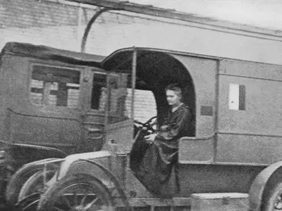
How
Marie Curie Brought X-Ray Machines To the Battlefield
During World War I, the scientist invented a mobile x-ray unit, called a "Little Curie," and trained 150 women to operate it
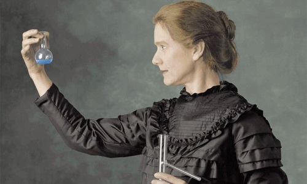
Marie
Curie built a scientific dream from a shabby lab
It doesn't take a modern lab or state-of-the-art equipment to come up with great ideas. Marie Curie became the famous female scientist from the most humid and dingy room a scientist could imagine.
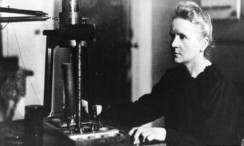
Marie
Curie - from a prostitute to a great scientist
Marie Curie, a physicist and chemist known for her work on radioactivity, was the first and only woman to receive the prestigious Nobel Prize in both physics and chemistry.
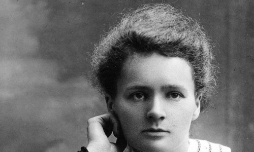
Marie
Curie, mother of radioactive material, died of blood cancer
After years of researching radioactive materials to find a way to get X-rays, Marie Curie suffered from severe anemia and leukemia due to exposure to excessive amounts of radiation.
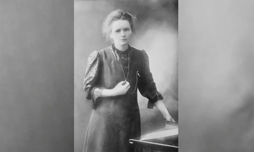
Why
was Marie Curie buried in a lead-lined coffin?
Marie Curie died of aplastic anemia caused by working with radiation and her coffin was later discovered by excavators with a 2.5 mm thick layer of lead.
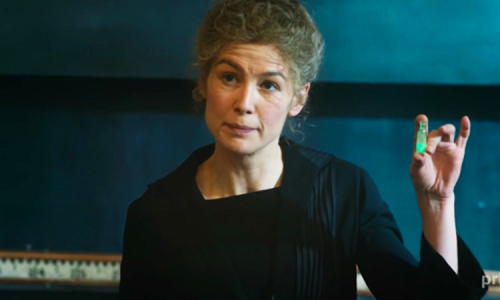
'Radioactive':
The Life of a Genius Marie Curie
The biographical film "Radiation" depicts the mother, wife and scientific research journey of genius Marie Curie.
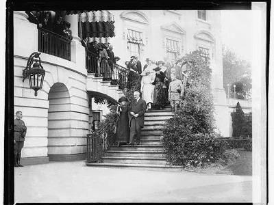
Three
Quirky Facts About Marie Curie
In honor of her 150th birthday, let's review a few lesser-known pieces of her personal history
Birthday: November 7, 1867 (Warsaw)
Born In: Kingdom of Poland, later part of the Russian Empire
Information
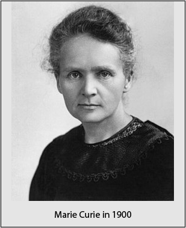 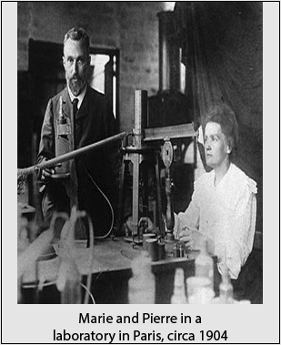 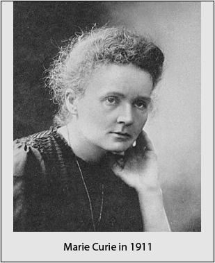 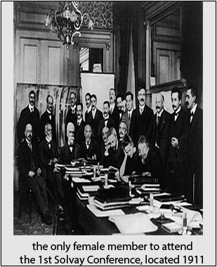 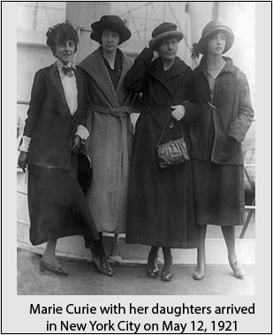Newspapers
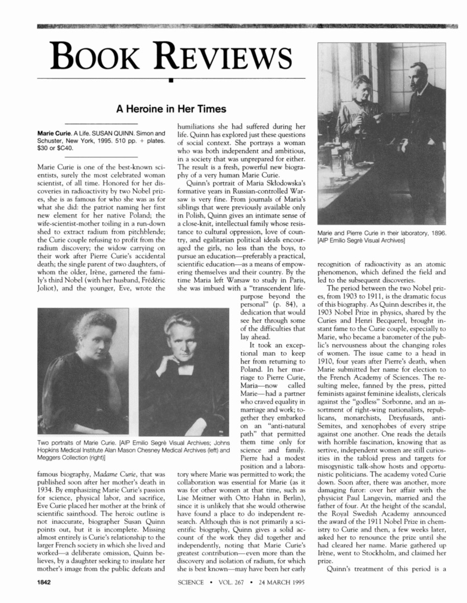 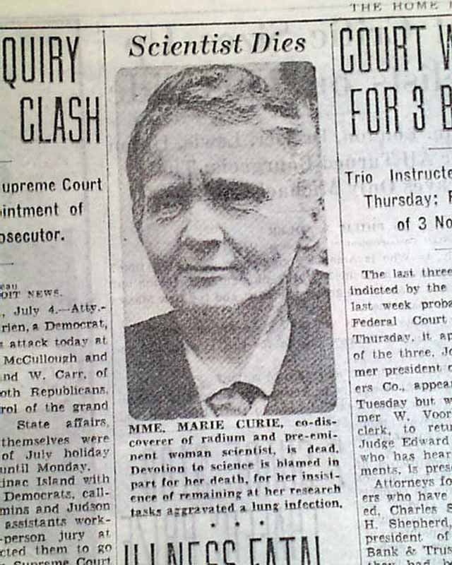 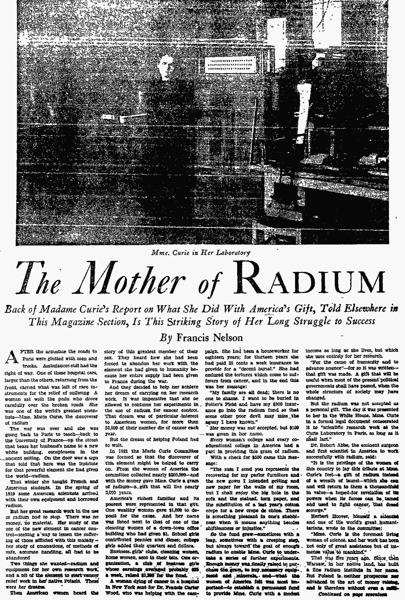Magazine
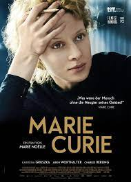 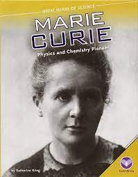 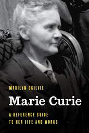 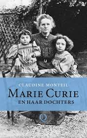Marie Curie in VietNam
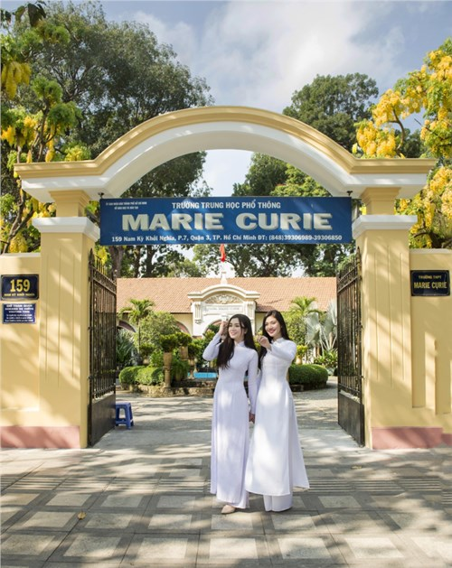 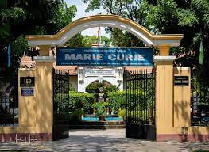 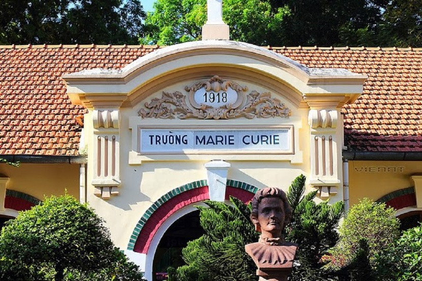Movie about Marie Curie

Comment(116)